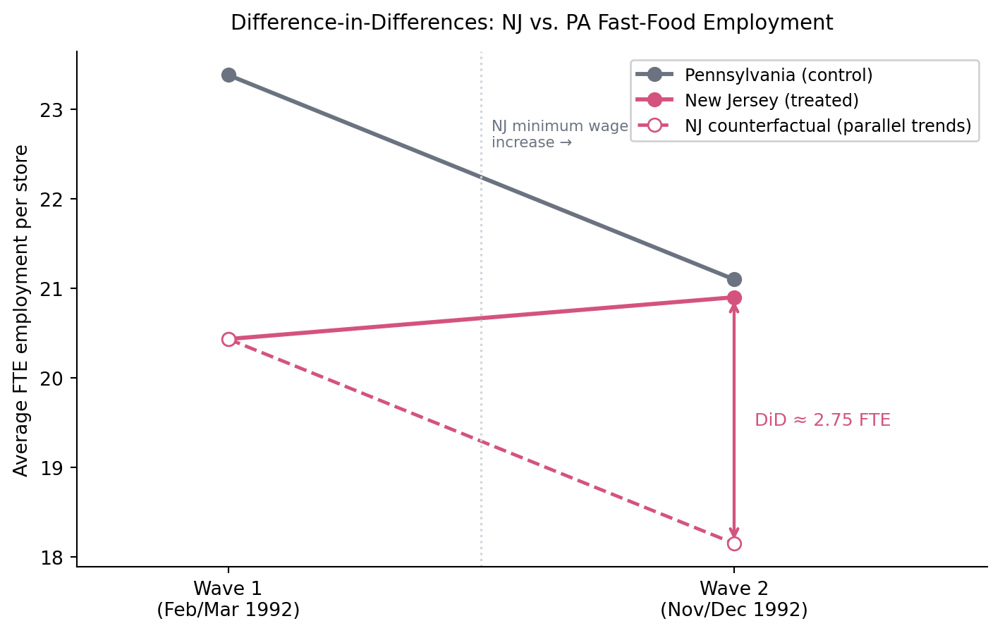

Replication of Card and Krueger (1994)
Minimum Wages and Employment: A Case Study of the Fast-Food Industry in New Jersey and Pennsylvania
Introduction
Does raising the minimum wage kill jobs? For decades, the standard answer in economics was yes – basic supply-and-demand logic predicts that a binding price floor on labor should reduce employment. Card and Krueger (1994) challenged that consensus head-on.
Their setup was clean: on April 1, 1992, New Jersey raised its minimum wage from $4.25 to $5.05 per hour. Pennsylvania, right next door, left its minimum wage unchanged. Card and Krueger surveyed fast-food restaurants in both states before and after the increase, then compared employment trends across the “treatment” state (NJ) and the “control” state (PA).
The key insight is that New Jersey and Pennsylvania share a border, similar labor markets, and similar fast-food industries. Any aggregate shocks – a recession, a regional slowdown – should affect both states roughly equally. That makes Pennsylvania a credible counterfactual: what would have happened to NJ employment if the wage hadn’t gone up?
This is a difference-in-differences design. Instead of comparing NJ before vs. after (which conflates the wage increase with any other time trend), or NJ vs. PA at a single point in time (which conflates the wage effect with any pre-existing differences), DiD takes the difference of differences:
\[ \hat{\tau}_{DiD} = (\bar{Y}_{NJ,\text{after}} - \bar{Y}_{NJ,\text{before}}) - (\bar{Y}_{PA,\text{after}} - \bar{Y}_{PA,\text{before}}) \]
The parallel trends assumption – that NJ and PA employment would have moved together absent the policy – is what licenses a causal interpretation. It’s not testable directly, but the geography and industry focus make it more plausible than most natural experiments.
What did they find? Employment in New Jersey increased relative to Pennsylvania after the minimum wage hike. The result was surprising, influential, and controversial enough to help reshape how economists think about labor markets.
Below, I replicate Table 2 (summary statistics), Table 3 (the core DiD estimate), and Table 4 column i (OLS regression). As a bonus, I visualize the parallel trends logic directly – something the paper presents only in tabular form.
Data
The dataset is available from David Card’s website. The raw file is a space-delimited .dat file with 46 columns documented in the accompanying codebook. The sample used throughout is the balanced panel: restaurants observed in both wave 1 (February/March 1992, before the wage increase) and wave 2 (November/December 1992, after). That gives us 75 Pennsylvania stores and 309 New Jersey stores.
Table 2 Replication: Summary Statistics
Table 2 in Card & Krueger reports wave-1 store characteristics separately for NJ and PA. The goal is a balance check – if the two groups look similar before the wage change, the parallel trends assumption is more credible.
Means with standard errors in parentheses. N = 75 (PA), 309 (NJ).
| Variable | Pennsylvania | New Jersey |
|---|---|---|
| FTE employment | 23.380 (1.387) | 20.431 (0.524) |
| % full-time employees | 0.301 (0.027) | 0.282 (0.013) |
| Starting wage ($/hr) | 4.630 (0.042) | 4.609 (0.020) |
| Wage = \(4.25 (share) | 0\.347 \(0\.055\) | 0\.304 \(0\.026\) | | Price of medium soda (\)) | 0.975 (0.008) | 1.063 (0.005) |
| Price of small fries ($) | 0.843 (0.010) | 0.941 (0.006) |
| Hours open (weekday) | 14.513 (0.342) | 14.398 (0.160) |
| % company-owned | 0.347 (0.055) | 0.350 (0.027) |
The two states look similar across prices, hours, and ownership structure. The one notable difference is that NJ stores were more likely to be paying exactly $4.25 before the hike – which makes sense, since the increase was only binding in NJ.
Table 3 Replication: The DiD Estimate
Table 3 is the core of the paper. The before/after means for each state, their within-state changes, and the difference of those changes – the DiD estimate.
Means with standard errors in parentheses.
| Pennsylvania | New Jersey | |
|---|---|---|
| FTE employment, wave 1 | 23.38 (1.39) | 20.43 (0.52) |
| FTE employment, wave 2 | 21.10 (0.97) | 20.90 (0.53) |
| Change (wave 2 – wave 1) | -2.28 (1.25) | 0.47 (0.48) |
Difference-in-differences: 2.75 (1.34)
PA employment declined slightly between waves; NJ employment rose. The DiD estimate – the causal effect attributable to the minimum wage increase – is positive at approximately 2.75 FTE workers per store. Under standard theory, employment should fall when you raise the minimum wage. Here it went the other direction.
Table 4 Replication: OLS Regression
Table 4 runs the same DiD as a regression, which lets Card & Krueger add controls for chain and ownership type. The model is:
\[ \Delta \text{FTE}_i = \alpha + \beta \cdot \mathbf{1}[\text{NJ}_i] + \varepsilon_i \]
where the outcome is the change in FTE for store \(i\) and the NJ coefficient is the DiD estimate. Column i has no controls; column ii adds chain dummies and ownership.
Dependent variable: change in FTE employment (wave 2 – wave 1). Standard errors in parentheses. Omitted chain: Burger King.
| Column i | Column ii | |
|---|---|---|
| Intercept (PA mean change) | -2.283 (1.036) | -1.828 (1.173) |
| New Jersey (DiD estimate) | 2.750 (1.154) | 2.785 (1.156) |
| KFC | 0.241 (1.277) | |
| Roy Rogers | -2.588 (1.298) | |
| Wendy’s | -0.191 (1.431) | |
| Company-owned | 0.363 (1.082) | |
| N | 384 | 384 |
| R-squared | 0.0146 | 0.0290 |
The intercept is the average employment change in PA, and the NJ coefficient is the same DiD estimate from Table 3. Adding chain and ownership controls barely moves the point estimate – the result isn’t driven by compositional differences between states.
Visualizing Parallel Trends
Card and Krueger present their results entirely in tables. The DiD logic is more intuitive visually. Below I plot average FTE employment in NJ and PA across both waves, alongside a counterfactual for NJ – what employment would have looked like had NJ followed PA’s trend instead of getting the wage increase.
The dashed line is the counterfactual: NJ employment declining slightly, in line with PA. Instead, NJ rose. The gap between the solid and dashed pink lines is the DiD estimate – roughly 2.75 FTE workers per store attributable to the minimum wage increase.
The parallel trends assumption is exactly that – an assumption. We can’t prove NJ would have followed PA’s path absent the policy. But the logic is defensible: the two states are adjacent, the fast-food industry was similarly structured in both, and Card and Krueger surveyed the same restaurants before and after, minimizing compositional noise.
Takeaways
The replication holds up. The three core numbers from Table 3 – PA change ≈ -2.28, NJ change ≈ 0.47, DiD ≈ 2.75 – are consistent with the published paper, and the OLS regression in Table 4 confirms the same estimate with a standard error around 1.2.
What makes this paper’s design credible as a causal claim:
- Natural experiment: NJ raised its minimum wage; PA didn’t. Card and Krueger didn’t have to randomize anything.
- DiD structure: Differencing out time trends and pre-existing state differences isolates the policy effect, under the parallel trends assumption.
- Within-industry comparison: Focusing on fast food reduces noise from industry mix. Both states had similar chains, similar ownership structures, and similar customer bases.
The finding challenged the textbook model of competitive labor markets and kicked off a large literature on minimum wages, monopsony, and labor market imperfections. The methodology – using geographic policy variation as a natural experiment – became a template for empirical work in economics throughout the 1990s and beyond.